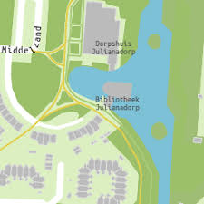
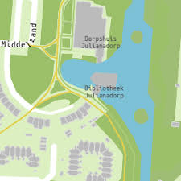

Het dorp Julianadorp

Het dorpshuis Julianadorp
Het nieuwe complex MFC Dorpshuis Julianadorp biedt ontspanning,
sport, spel en educatie voor à lle Julianadorpers.
Het bestuur van Dorpshuis Julianadorp had op zaterdag 26 september, in het kader van
de landelijke Burendag, de buren van het dorpshuis uitgenodigd voor de koffie en om tegelijkertijd
hernieuwd kennis te maken met het prachtige Dorphuis van Julianadorp.
September is ook destartmaand van het nieuwe winterseizoen voor de activiteiten binnen het dorphuis en ook
voor meerdere verenigingen is het een nieuwe start na de zomervakantie.
 
